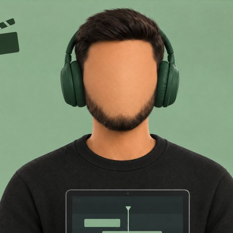
Amine · ton monteur vidéo IAJe traduis tes pubs dans la langue que tu veux, avec une vraie voix.
On m'installe ensemble ?
Une petite étape à la fois, environ 20 minutes en tout. Rien ne s'installe sur ton ordinateur : je travaille dans le cloud de Claude.
Comment tu t'appelles ?
Ton avancement est gardé sur ce navigateur : tu peux fermer la page et revenir plus tard.
voici mes outils
Il te faut un compte à toi sur chacun. Tu paies seulement ce que tu utilises.
Fais l'installation sur un ordinateur. Après, tu pourras aussi lancer des vidéos depuis ton téléphone.
Crée ton compte GitHub
C'est là qu'Amine rangera tes vidéos finies. Tes pubs à traduire, tu les donneras directement à Amine dans Claude : rien à déposer sur GitHub.
Créer mon compte GitHubTu en as déjà un ? Garde-le et clique sur « C'est fait ».
Crée ton dossier de vidéos
Un dossier à toi, où arriveront tes vidéos finies. Lis d'abord les 2 étapes, puis clique sur le bouton en bas : tout est déjà rempli.
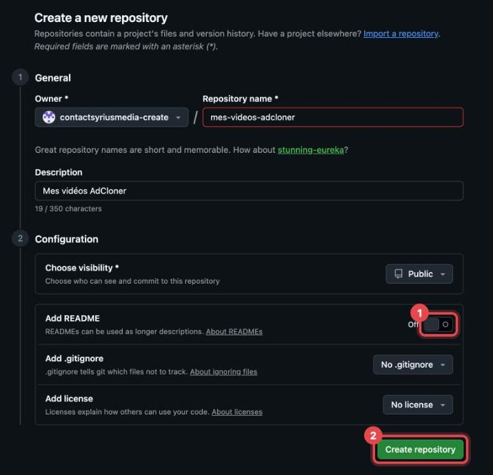
- Clique sur l'interrupteur Add README pour le passer sur On.
- Clique sur le bouton vert Create repository.
Ton pseudo GitHub
Sur la page de ton dossier, ton pseudo est écrit en haut à gauche, juste avant mes-videos-amine-ia :
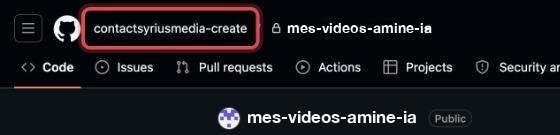
Recopie-le ici :
Pourquoi ? Pour que ton bouton « Lancer Amine » ouvre directement ton dossier de vidéos. Comme ça, Amine sait où te livrer, et tu n'as rien à choisir à chaque fois.
Ta clé Groq
Une clé, c'est un long code qui permet à Amine d'utiliser ton compte.
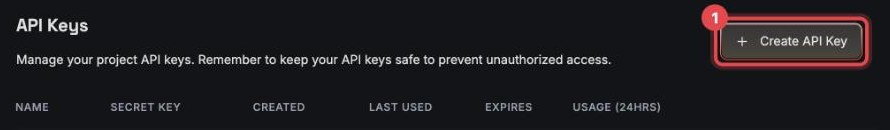
- Crée ton compte (gratuit) si on te le demande.
- Clique sur Create API Key, écris
Aminecomme nom, puis valide. - Copie la clé affichée (elle commence par
gsk_) et colle-la dans ta note.
Ta clé ElevenLabs
Il te faut l'abonnement Starter au minimum (pour le clonage de voix).
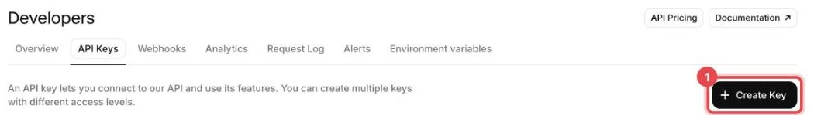
Clique sur Create Key. Une fenêtre s'ouvre à droite :
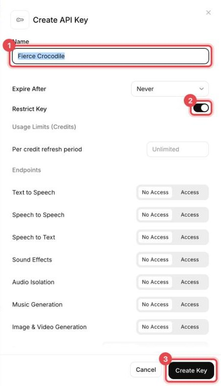
- Dans Name, écris
Amine. - Clique sur l'interrupteur Restrict Key pour l'éteindre.
- Clique sur Create Key, puis copie la clé (elle commence par
sk_) dans ta note.
Ta clé Replicate
Replicate sépare la voix d'origine de la musique : Amine garde la musique de la pub et pose la nouvelle voix par-dessus.
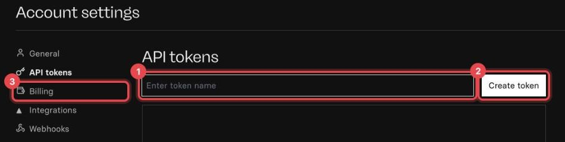
- Écris
Aminedans la case, puis clique sur Create token. - Copie le jeton (il commence par
r8_) dans ta note. - Clique sur Billing et ajoute ta carte : sans carte, la clé ne marche pas (c’est presque gratuit à l’usage).
Tes clés Vmake
Il te faut l'abonnement Plus au minimum : c'est obligatoire pour l'API.
1. Sur Vmake, clique sur l'onglet API Keys en haut (connecte-toi si on te le demande) :
2. Tu arrives sur la page de tes clés :
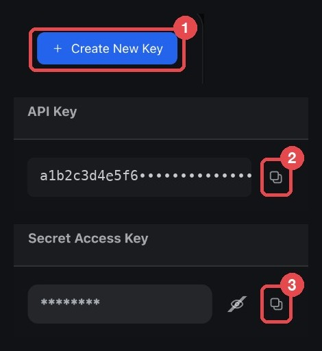
- Pas encore de clé dans le tableau ? Clique sur Create New Key (repère 1).
- Clique sur le bouton copier à droite de l'API Key (repère 2), puis colle-la dans ta note en écrivant devant :
API Key : - Clique sur le bouton copier à droite de la Secret Access Key (repère 3), puis colle-la dans ta note en écrivant devant :
Secret :
********. Après l'avoir collée, vérifie dans ta note que ce n'est pas des étoiles : sinon, clique d'abord sur l'œil barré pour l'afficher, puis recopie-la.Ouvre Claude et crée ton environnement
L'environnement, c'est l'atelier où Amine travaille. Tout se passe sur claude.ai/code (bouton 1 en bas) :
- La première fois, Claude te propose de connecter GitHub : accepte. GitHub te demande où installer Claude : laisse All repositories coché, puis clique sur le bouton vert Install. S'il ne te propose rien, c'est déjà fait. Si ça bloque, utilise le bouton 2.

Ensuite, tout en bas sous la zone de message :
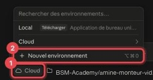
- Clique sur le bouton avec le petit nuage.
- Clique sur Nouvel environnement.
Le nom et l'accès Internet
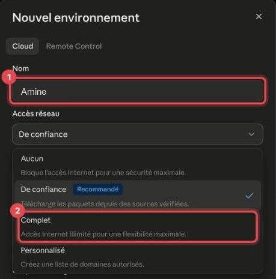
- Dans Nom, écris
Amine. - Clique sur Accès réseau et choisis Complet.
Le démarrage et les réglages
Fais défiler la fenêtre vers le bas :
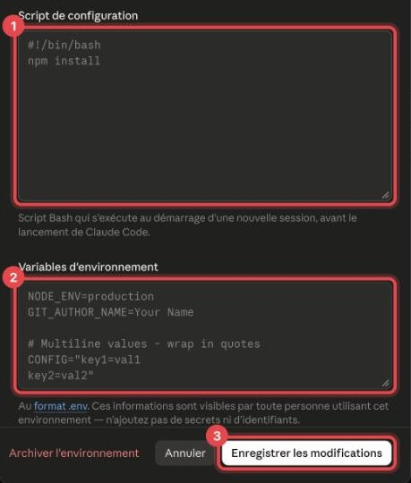
1. Dans « Script de configuration », colle :
#!/bin/bash for d in /home/user/*/; do [ -f "$d/amine/SKILL.md" ] && bash "$d/setup.sh"; done
2. Dans « Variables d'environnement », colle :
GROQ_API_KEY=cloud ELEVENLABS_API_KEY=cloud REPLICATE_API_TOKEN=cloud MT_AK=COLLE_ICI_TON_ACCESS_KEY_VMAKE MT_SK=COLLE_ICI_TON_SECRET_KEY_VMAKE BASH_DEFAULT_TIMEOUT_MS=600000 BASH_MAX_TIMEOUT_MS=1800000
MT_AK=, la Secret Access Key après MT_SK=, sans espace.3. Clique sur Ajouter un environnement en bas (ou Enregistrer les modifications).
Range ta clé Groq
Le coffre (« Secrets réseau ») garde tes clés à l'abri : Claude peut s'en servir, mais jamais les lire.
Rouvre ton environnement (bouton nuage → Cloud → passe la souris sur Amine → roue dentée), puis clique sur Ajouter un secret :

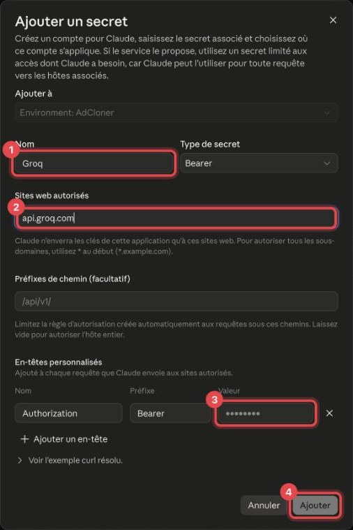
- Nom :
Groq - Sites web autorisés : tape
api.groq.compuis appuie sur Entrée. - Valeur : colle ta clé Groq (laisse Authorization et Bearer tels quels).
- Clique sur Ajouter.
Range ta clé ElevenLabs
Clique encore sur Ajouter un secret. Attention, celui-ci a deux cases différentes (3 et 4) :
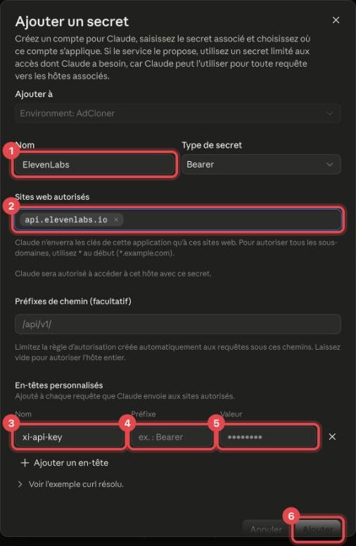
- Nom :
ElevenLabs - Sites web autorisés : tape
api.elevenlabs.iopuis Entrée. - Sous « En-têtes personnalisés », remplace
Authorizationparxi-api-key. - Efface le mot
Bearer: la case Préfixe doit être vide. - Valeur : colle ta clé ElevenLabs.
- Clique sur Ajouter.
Range ta clé Replicate
Une dernière fois Ajouter un secret, exactement comme pour Groq :
- Nom :
Replicate - Sites web autorisés : tape
api.replicate.compuis Entrée. - Valeur : colle ta clé Replicate.
- Clique sur Ajouter, puis sur Enregistrer les modifications.
Tes clés sont à l'abri : tu peux supprimer ta note.
Le test
Ce bouton ouvre Claude avec tout déjà choisi :
Lancer le test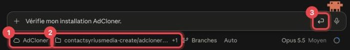
- Vérifie en bas : Amine, et ton dossier amine-monteur-video-ia avec +1 (tes deux dossiers).
- Le message est déjà écrit : clique sur la flèche d'envoi.
Claude doit répondre que tout est ok. Sinon, il te dit quelle étape refaire : utilise « Retour » pour y revenir.
Envoie-moi ta première pub.
Bravo , Amine est prêt
Pour traduire une pub :
Lancer Amine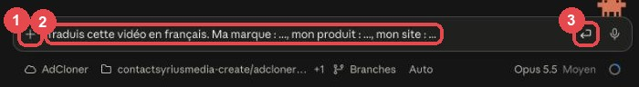
- Clique sur le + à gauche et choisis ta vidéo sur ton ordinateur.
- Complète le message déjà écrit : la langue, ta marque, ton produit, ton site.
- Clique sur la flèche d'envoi.
Amine t'annonce le coût et attend ton ok. Environ 15 minutes plus tard, il te donne un lien pour télécharger ta vidéo finie. Tu peux fermer l'ordinateur en attendant.
Un souci ?
Claude dit qu'une variable est « MANQUANTE »
Revois l'écran « Les réglages » de ton atelier, puis démarre une nouvelle session.
Erreur 401 ou « invalid api key »
La clé de ce service est fausse. Supprime son secret dans le coffre et ajoute-le à nouveau. ElevenLabs : la clé commence par sk_.
Erreur 402, « insufficient credit » ou quota
Le compte de ce service n'a plus de crédit : recharge-le.
Claude ne voit pas mon dépôt
Refais l'écran « Ouvre Claude et crée ton environnement » (bouton 2 : installer Claude sur GitHub, avec All repositories).
Ma vidéo ne s'ajoute pas (trop lourde)
Réduis-la avant (par exemple avec HandBrake, gratuit), ou demande à ton formateur.